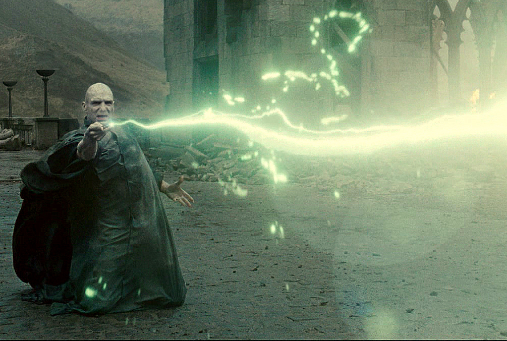
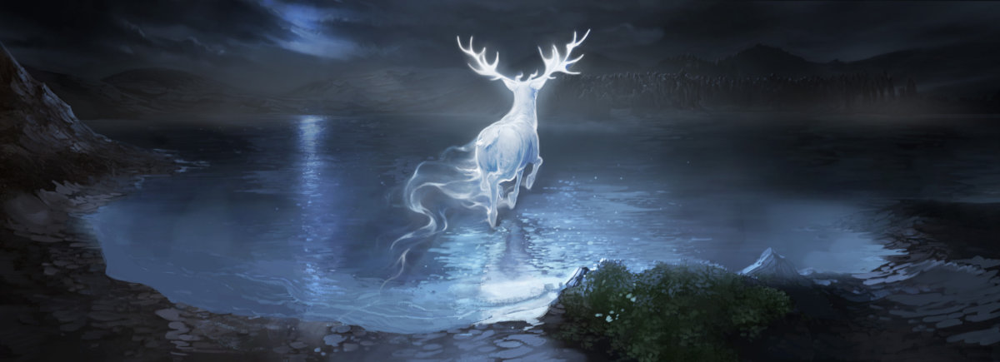
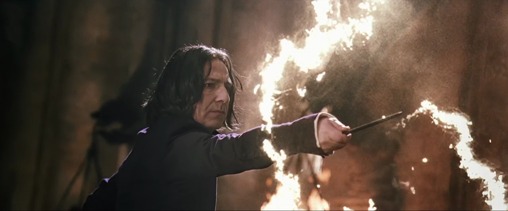
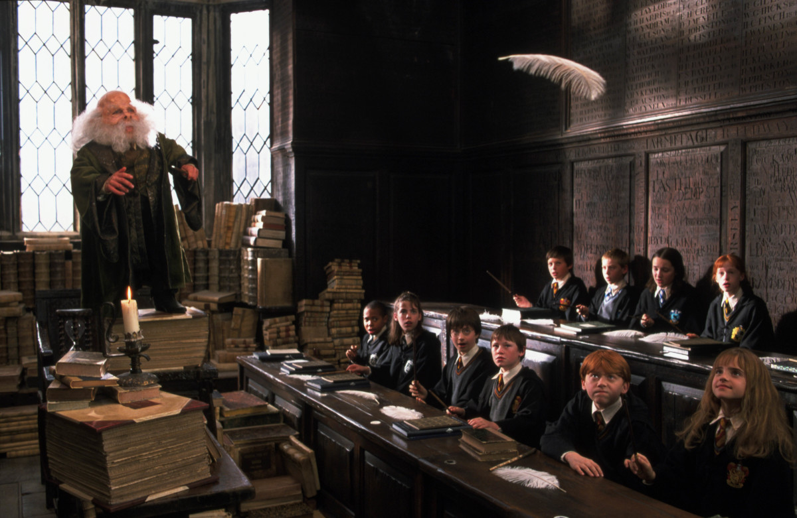
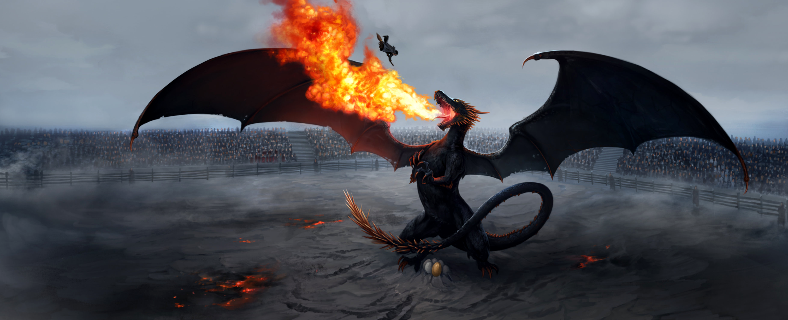

VRAJI&POTIUNI
- Avada Kedavra
- Dintre vrajile interzise in lumea vrajitorilor, Avada Kedevra este blestemul fatal, care provoca moartea instantanee. Nu are contrablestem si singurul care i-a rezistat a fost Harry Potter. Este preferatul taberei lui Voldemort, Bellatrix fiind una dintre specialiste, putand fi realizat doar de vrajitori cu puteri magice deosebite. Interesant este ca in varianta Abracadabra, in alte povesti, era doar o formula de anuntare a magiei.

Voldemort invocand cruntul blestem al mortii
- Expecto Patronum
- Vraja Patronus este specialitatea lui Harry Potter, dar este si una din cele mai spectaculoase dintre vraji. Este o vraja personalizata, pentru initiati, care isi creaza un fel de protector, un patronus luminos, care odata invocat te poate apara in diverse situatii ( de exemplu de infricosatorii dementori). Interesant este faptul ca fiecare isi creaza propriul patronus, in functie de caracter si de sentimentele care il domina. Pentru Harry este un cerb, pentru Hermione o vidra, pentru Ron u caine, pentru Ginny un cal, iar pentru Snape o caprioara, la fel cu patronusul mamei lui Harry, de care era indragostit. Fascinant. Voi ce patronus ati crea?

Cerbul, patronusul protector a lui Harry, dar si a tatalui lui.
- Expelliamus
- Una din cele mai uzuale vraji, Expelliarmus, este folosita pentru dezarmare in duelurile vrajitoresti. Aceasta vraja de dezarmare l-a ajutat pe Harry Potter, sa treaca de multe momente critice, mai ales ca acesta prefera sa se apere, nu sa atace. Nu pot insa sa uit eleganta si eficienta cu care aceasta vraja este folosita de Snape, in faza memorabila a duelului cu profesorul Lockhart.

Snape, invatandu-i pe elevi sa se dueleze
- Crucio
- In afara blestemului mortii, mai exista alte doua blesteme de neiertat, folosite de tagma adeptilor lui Voldemort. Varianta mai blanda este blestemul Imperius prin care se poate obtine controlul total al victimei, el putand fi anihilat prin concentrare. Celalalt este blestemul Cruciatus, unul din cele mai crude, prin care adeptii magiei megre isi puteau tortura victimele. Foarte interesant este modul didactic si eficient prin care Moody Ochi-Nebun, ajuns profesor la Hogwarts, le prezinta elevilor sai cele trei blesteme incercand sa-i invete sa se apere.
- Obliviate
- Obliviate este vraja uitarii, prin care se pot sterge amintirile unei persoane. Este vraja pe care cei de la Ministerul Magiei o folosesc pentru a repara imixtiunile nedorite cu lumea incuiatilor. Efectele ei pot fi comice, daca ne gandim la ce pateste Gilderoy Lockhart, victima a propriului blestem, sau dureroase, dar salvatoare daca ne gandim la scena in care Hermione i-a decizia de a-si proteja parintii.
- Wingardium Leviosa
- Wingardium Leviosa este vraja prin care un obiect poate fi facut sa leviteze. Este una din putinele vraji care nu ii creaza probleme simpaticului Ron Weasley si este solutia salvatoare din scena haioasa in care Ron se lupta cu un troll.

Prima ora de vraji unde au invatat vraja WingardiumLeviosa pe o pana.
- Petrificus Totalis
- Harry Potter nu ar fi reusit sa faca fata incercarilor si primejdiilor prin care a trecut fara buna lui prietena, Hermione Granger. Acesteia ii ies toate vrajile, este inventiva si isteata si gaseste mereu solutii salvatoare. Nu i se pot reprosa decat principiile rigide si lipsa de spontaneitate. De aceea reuseste sa ne surprinda cand trebuie sa reactioneze rapid. De exemplu, nimeni nu s-ar fi asteptat sa foloseasca vraja de impietrire temporara impotriva unui prieten.
- Stupefy
- Stupefy este o vraja de aparare de baza, des folosita de tinerii invatacei de la Hogwarts. Nu este primejdioasa, rezolva pentru scurt timp o situatie, oferind ragaz de gandire pentru alta solutie. Efectul este un jet de lumina rosie care lasa victima in inconstienta. memorabila este scena de la Ministerul Magiei in care arma lui Dumbledore, foloseste pe rand toate vrajile de aparare cunoscutë: Stupefy, Expeliarmus, Reducto, Levicorpus, Petrificus Totalis…
- Accio
- Daca este sa ne referim la cea mai des auzita dintre vrajile pottarasti, Accio este cu siguranta una din primele vraji care se invata si deosebit de folositoare. Este simpla si eficienta, cere concentare si poate aduce obiecte de la distanta, salvand multe situatii limita. Cred ca este vraja preferata de orice persoana comoda.

Harry folosind Accio pentru a-si chema matura in cadrul Turneului Vrajitorilor
- Rictusempra
- Rictusempra este o vraja de aparare spectaculoasa, folosita prima oara de Harry Potter in duelul cu vesnicul rival Draco, ca raspuns la un atac miselesc al acestuia. Vraja presupune reactie rapida si pune in dificultate adversarul provocandu-i o excitare nervoasa, ca un fel de gadilare excesiva.